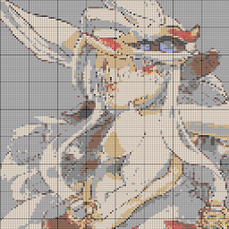

Nanachi's Room
自己紹介
- 河田 尚孝（カワタ ナオタカ） (Twitter)
- [略歴]
学部、修士で機械翻訳およびエンティティリンキングの研究に従事。
研究の傍ら、大学のロボットサークルに所属しレスキューロボットの開発を行っていた。
また、共同研究の一環として生活支援ロボットの開発に取り組み、自然言語処理や物体認識などのマルチモーダル情報を用いた経路生成手法を新たに提案・実装した。
業務では、自然言語処理や音声認識の知識を生かしたソフトウェア開発に携わっている。
- [スキル・業務経験]
- 深層学習モデルを用いたプロダクト開発。
- 論文やコードから各深層学習モデルの処理を理解し、独自の改良を加えることができる。
- スケジュールや予算を考慮したプロジェクト運営
- コミュニティ活動に携わっており、中国・四国地方のROS開発者コミュニティであるSetoROSの立ち上げに貢献。
- 業務を進めるうえで論文からモデル構造を理解する必要があるため、英語日本語問わず話題になった研究については自発的に調査して、自己研鑽に励んでいる。
- 自然言語処理がメインですが、ロボットコンテストにも参加していたため、ソフトウェアとハード両方の面からプロダクトを作成することができる。
- ロボコン参加時に培った体力と根性
- 発表や執筆経験も豊富で、技術を知らない人にも分かりやすくプロダクトの概要を伝えられることが強み。
職務経歴
- 2020/04 - 現在 NTTテクノクロス株式会社
- 2023/01 - 現在 日本電信電話株式会社
強み
- 自然言語処理
- Deep Learning
- ロボティクス
- プロジェクトマネジメント
- AWS
連絡先
- naotaka.kawata[at]gmail.com（atは@に置き換えてください）
- Twitter
登壇資料
受賞歴
執筆
外部サイト
資格
Nanachi's Room
about me
- Naotaka KAWATA (Twitter)
- NTT TechnoCross / Software Engineer
- NLP / Robotics / Multimodal
- GitHub
career
- NTT TechnoCross (April 2020 - present)
- NTT Corporation (January 2023 - present)
strength
- NLP (Natural Language Processing)
- Deep Learning
- Robotics
- Project Management
- AWS (Aamazon Web Services)
connect
- naotaka.kawata[at]gmail.com（Please replace "at" with "@"）
- Twitter
awards